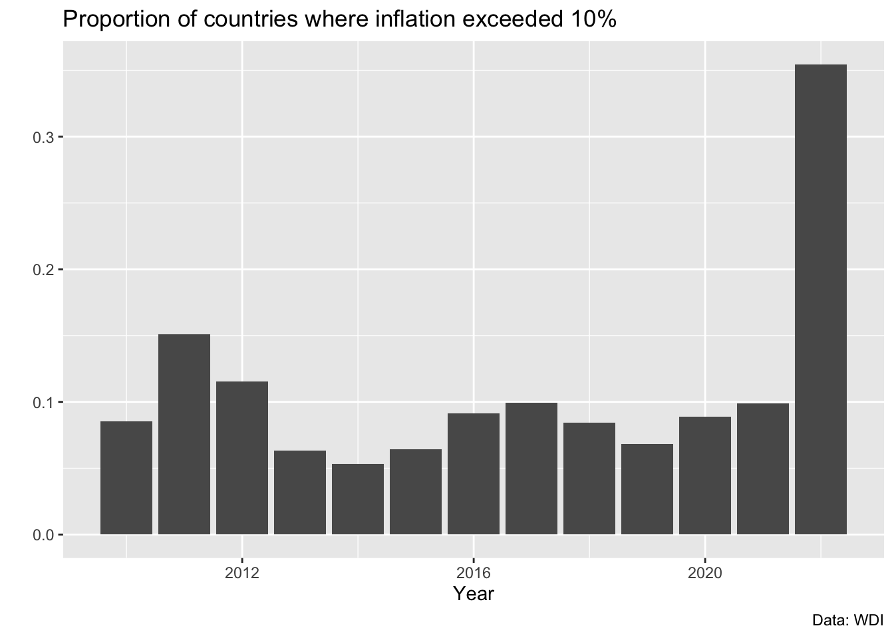
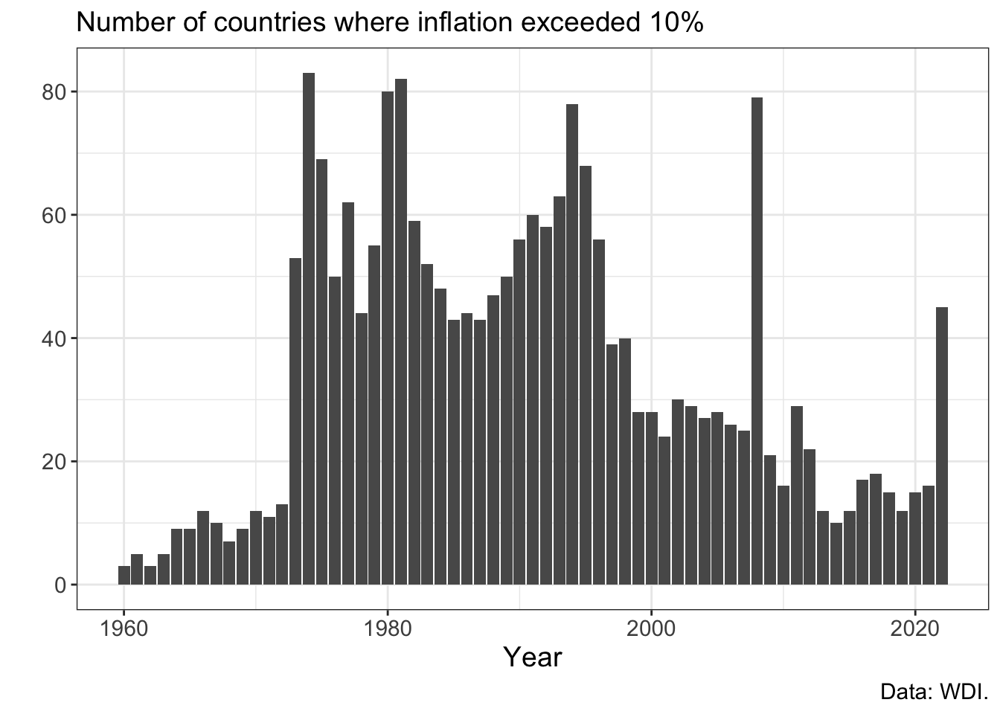
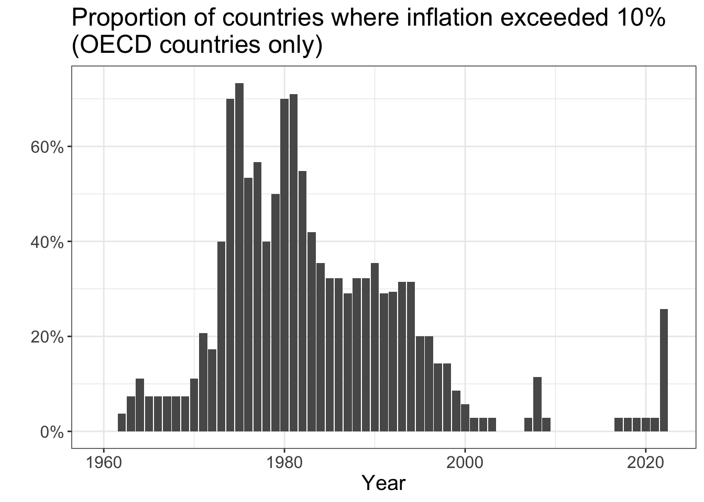
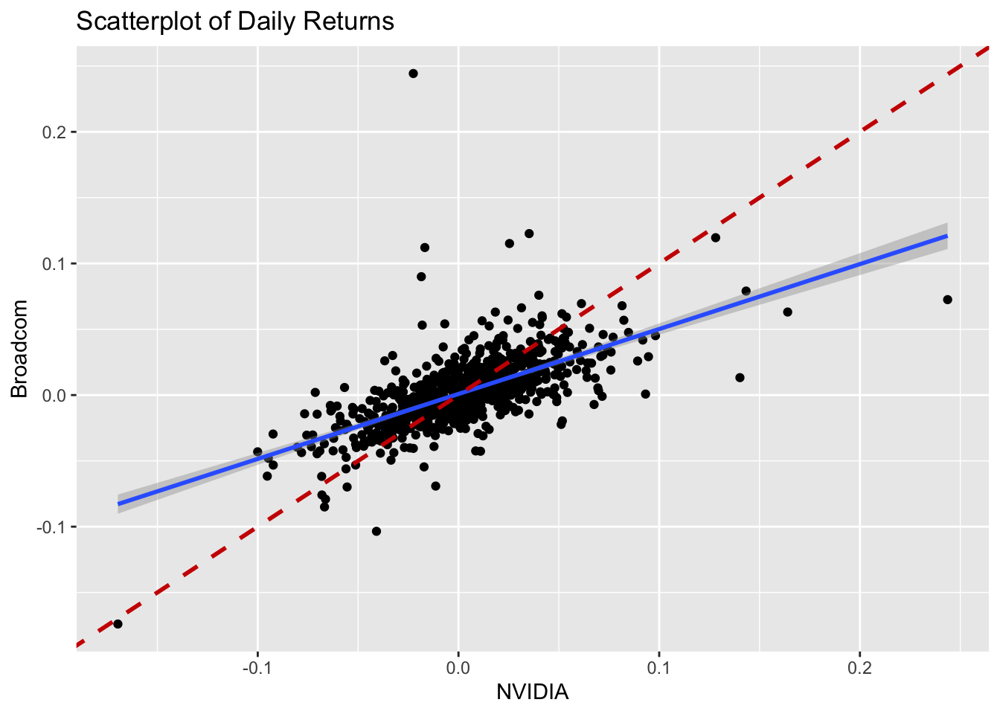

library(tidyverse)
D <- read_csv("data_macro/inflation_WDI.csv")
oecd <- read_csv("data_macro/oced_codes.csv")
#biggerText <- jzPack::biggerText
# Merge in OECD indicators
D <- left_join(D,oecd)3 Economic data over time
3.1 Analysis of inflation patterns
In how many countries has inflation exceeded 10% in 2022:
D %>%
filter(year == 2022) %>%
mutate(over10 = ifelse(inflation > 10, 1, 0)) %>%
count(over10)# A tibble: 2 × 2
over10 n
<dbl> <int>
1 0 82
2 1 45D %>%
filter(year %in% c(2010:2022)) %>%
mutate(over10 = ifelse(inflation > 10, 1, 0)) %>%
group_by(year) %>%
summarise(n = n(),
over10 = sum(over10)) %>%
ggplot(aes(x=year,y=over10)) +
geom_col() +
labs(y="", x="Year",
title = "Number of countries with inflation 10%+",
caption = "Data: WDI")D %>%
filter(year %in% c(2010:2022)) %>%
mutate(over10 = ifelse(inflation > 10, 1, 0)) %>%
group_by(year) %>%
summarise(n = n(),
prop = sum(over10)/n) %>%
ggplot(aes(x=year,
y=prop)) +
geom_col() +
labs(y="", x="Year",
title = "Proportion of countries where inflation exceeded 10%",
caption = "Data: WDI")
Ther are some obivous problems with the x-axis here, so let’s solve that, plus a few minor issues:
barplot_V2 <- D %>%
filter(year %in% c(2010:2022)) %>%
mutate(over10 = ifelse(inflation > 10, 1, 0)) %>%
group_by(year) %>%
summarise(n = n(),
prop = sum(over10)/n) %>%
ggplot(aes(x=year,
y=prop)) +
geom_col() +
labs(y="", x="Year",
title = "Proportion of countries where inflation exceeded 10%",
caption = "Data: WDI") +
scale_x_continuous(breaks = c(2010:2022)) +
scale_y_continuous(labels = scales::percent) +
theme(text = element_text(size=15)) +
theme_bw()
barplot_V2We improves the labels of both axies, and increased the font size.
The new version is reasonably good, but there are still unnecessary gridlines, right?
You could either use theme_classic() instead of theme_bw().
barplot_V2 +
theme_classic() Or we can keep theme_bw() and make some adjustments:
barplot_V2 +
theme(panel.grid.minor.x = element_blank(),
panel.grid.major.x = element_blank())
D %>%
filter(!is.na(inflation)) %>%
mutate(over10 = ifelse(inflation > 10, 1, 0)) %>%
group_by(year) %>%
ggplot(aes(x=year,
y=over10)) +
geom_col() +
theme_bw() +
theme(text = element_text(size=14)) +
labs(y="", x="Year",
subtitle = "Number of countries where inflation exceeded 10%",
caption = "Data: WDI.")
3.1.1 Zoom in on OECD countries and increase the time horizon
D %>% filter(OECD==1) %>%
filter(!is.na(inflation)) %>%
mutate(over10 = ifelse(inflation > 10, 1, 0)) %>%
group_by(year) %>%
summarise(n = n(),
prop = sum(over10)/n) %>%
ggplot(aes(x=year,
y=prop)) +
geom_col() +
theme_bw() +
theme(text = element_text(size=15)) +
scale_y_continuous(labels = scales::percent) +
labs(y="", x="Year",
title = "Proportion of countries where inflation exceeded 10%\n(OECD countries only)")
D %>%
mutate(over5 = ifelse(inflation > 5, 1, 0)) %>%
group_by(year) %>%
summarise(n = n(),
prop = sum(over5)/n) %>%
ggplot(aes(x=year,
y=prop)) +
geom_line() + geom_point() +
theme_bw() +
theme(text = element_text(size=15)) +
scale_y_continuous(labels = scales::percent) +
labs(y="", x="Year",
subtitle = "Global proportion of countries where inflation exceeded 5%",
caption = "Data: WDI.")D %>% filter(OECD==1) %>%
filter(!is.na(inflation)) %>%
group_by(year) %>%
summarise(M = median(inflation)) %>%
ggplot(aes(x=year,
y=M)) +
# geom_point() + geom_line() +
geom_col() +
theme_bw() +
theme(text = element_text(size=15)) +
labs(y="", x="Year",
title = "Median inflation in OECD countries")3.2 Analysis of stock returns
Get data on stocks prices:
library(tidyquant)
stocks <- tq_get(c("NVDA", "AVGO","^GSPC"),
from = "2022-015-01",
to = "2024-06-05")stocks %>%
ggplot(aes(x = date, y = adjusted, color = symbol)) +
geom_line() +
theme_minimal() +
labs(title = "NVIDIA vs Broadcom Stock Prices",
y = "Adjusted Price",
color = "Stock")Calculate returns
returns <- stocks %>%
group_by(symbol) %>%
tq_transmute(select = adjusted,
mutate_fun = periodReturn,
period = "daily",
col_rename = "ret") %>%
ungroup() %>%
pivot_wider(names_from = symbol,
values_from = ret) %>%
na.omit()Calculate rolling correlations:
returns$roll_cor <- zoo::rollapply(data = returns[, c("NVDA", "AVGO")],
width = 30,
FUN = function(x) cor(x[,1], x[,2]),
by.column = FALSE,
align = "right",
fill = NA)
returns$roll_corNVSP <- zoo::rollapply(data = returns[, c("NVDA", "^GSPC")],
width = 60,
FUN = function(x) cor(x[,1], x[,2]),
by.column = FALSE,
align = "right",
fill = NA)returns %>%
filter(date >= "2022-04-01") %>%
ggplot(aes(x = date, y = roll_cor)) +
geom_line(color = "blue") +
geom_hline(yintercept = 0, linetype = "dashed", color = "red") +
theme_minimal() +
labs(subtitle = "30-Day Rolling Correlation of Daily Returns: NVIDIA vs Broadcom",
title = "Do semiconductor industry giants move together?",
y = "Correlation Coefficient",
x = "Date") +
scale_y_continuous(limits = c(-.5, 1))
returns %>%
filter(date >= "2022-04-01") %>%
ggplot(aes(x = date, y = roll_corNVSP)) +
geom_line(color = "blue") +
geom_hline(yintercept = 0, linetype = "dashed", color = "red") +
theme_minimal() +
labs(subtitle = "60-Day Rolling Correlation of Daily Returns: NVIDIA vs SP500",
title = "Do semiconductor industry giants move together?",
y = "Correlation Coefficient",
x = "Date") +
scale_y_continuous(limits = c(-.5, 1))
Scatterplots of returns
ggplot(returns, aes(x = NVDA, y = AVGO)) +
geom_point() +
geom_smooth(method = "lm") +
labs(title = "Scatterplot of Daily Returns",
x = "NVIDIA",
y = "Broadcom") +
geom_abline(intercept = 0, slope = 1,
color = "red3",linetype=2,linewidth=1) ggplot(returns, aes(x = NVDA, y = AVGO)) +
geom_point() +
labs(title = "Scatterplot of Daily Returns",
x = "NVIDIA",
y = "Broadcom")ggplot(returns, aes(x = `^GSPC`, y = AVGO)) +
geom_point() +
labs(title = "Scatterplot of Daily Returns",
x = "S&P500",
y = "Broadcom")
ggplot(returns, aes(x = `^GSPC`, y = NVDA)) +
geom_point() +
labs(title = "Scatterplot of Daily Returns",
x = "S&P500",
y = "NVIDIA")Let’s also look at correlation during different market conditions
returns %>%
mutate(year = year(date)) %>%
group_by(year) %>%
summarize(correlation = cor(NVDA, AVGO)) %>%
print()# A tibble: 4 × 2
year correlation
<dbl> <dbl>
1 2022 0.828
2 2023 0.532
3 2024 0.568
4 2025 0.796returns %>% mutate(ym = floor_date(date,"month")) %>%
group_by(ym) %>%
summarize(correlation = cor(NVDA, `^GSPC`)) %>%
ggplot(aes(x = ym, y = correlation)) +
geom_col()